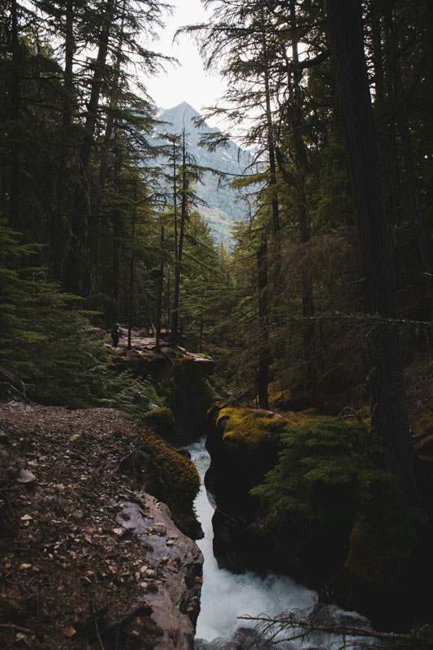

Guided Hiking Tours at Elder Glen National Park
“Explore the Beauty. Respect the Unknown.”
Elder Glen National Park offers a variety of guided hiking tours for visitors of all experience levels. Our rangers will lead you through some of the park’s most breathtaking landscapes, share fascinating ecological and historical insights, and ensure you have a safe and memorable journey. Choose the experience that speaks to you—but choose wisely.

The Whispering Woods Walk (Easy – 2 miles, 1.5 hours)
- A gentle, scenic hike through one of Elder Glen’s oldest groves.
- Learn about the towering oaks and ancient moss formations unique to the region.
- Occasionally, visitors report hearing soft murmurs in the breeze—our guides assure you it’s just the wind.
- Traveler’s Tip: If you feel like someone is walking beside you, do not comment on it aloud.
The Veilwood Trail Expedition (Moderate – 3.5 miles, 2 hours)
- Explore the mysterious and misty Veilwood region, where sunlight filters through the trees in unexpected ways.
- Spot rare birds, hidden groves, and plants that only grow in the shadows.
- Learn about the disappearance of early surveyors who once mapped this region.
- Traveler’s Tip: If you see a deer standing unnaturally still on the path, turn around and take a different route.
Firewatch Lookout Hike (Moderate – 4 miles, 2.5 hours)
- Trek up to the historic Veilwood Firewatch Tower, offering panoramic views of the entire park.
- Hear the true story of the firewatch officer who vanished in 1962—some say his radio still crackles to life on certain nights.
- Enjoy a quiet, reflective moment at the summit… if the silence doesn’t get too heavy.
- Traveler’s Tip: If you hear knocking from the inside of the tower, let the ranger open the door first.
The Lost Clearing Tour (Moderate – 3 miles, 2 hours)
- Visit a peaceful, open meadow where wildflowers bloom year-round.
- Discuss Elder Glen’s unique weather anomalies—for example, how this clearing sometimes doesn’t appear on satellite images.
- Take part in the tradition of leaving a small offering (a pebble, a twig, a word whispered into the wind). It’s just for fun. Just a tradition.
- Traveler’s Tip: If the clearing seems smaller on the way back, walk faster.
The Forgotten Trail Experience (Difficult – 5 miles, 3 hours)
- Follow one of the park’s oldest, least-traveled paths.
- Learn about the early settlers who built cabins deep in the woods—cabins that no longer exist.
- Observe strange tree growths and carvings that predate written records.
- Traveler’s Tip: Traveler’s Tip: If your footprints disappear behind you, tell no one.
SPECIAL TOUR: “Paths Unknown” (Difficulty Unknown – Length Unknown)
- This tour is not listed on the official schedule, but sometimes, visitors are invited.
- If a ranger you don’t recognize offers to take you on a “different kind of adventure,” you may refuse.
- If you accept, be prepared. You may see things you were not meant to see.
- Traveler’s Tip: If your group is larger at the end of the hike than when you started, leave quickly and do not look at the new arrivals.
Important Notes & Safety Guidelines
- All tours require reservations and fill up quickly.
- Stay with your group—wandering off is not permitted.
- If you see lights deep in the forest, do not follow them.
- If a member of your group appears confused or disoriented, notify your ranger immediately.
- If you hear your name called from the trees, inform your ranger but do not respond.